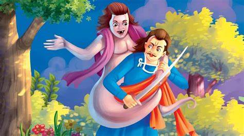

"' એક દુષ્ટાત્મા પણ ત્યાં એક પીપળના ઝાડ પર બેઠેલો હતો, તે દ્રશ્ય જોઈ રહ્યો હતો. તેના મગજમાં તરત જ તેના (મૃત) શરીરમાં પ્રવેશ કરીને તેની સાથે શારીરિક સમાગમ કરવાનો વિચાર આવ્યો. આનો સંકલ્પ કરીને તેણે શરીરમાં પ્રવેશ કર્યો, અને તેની સાથે સંભોગ કર્યા પછી, તેના દાંતથી તેનું નાક કાપી નાખ્યું, અને જઈને તે જ ઝાડ પર બેસી ગયો. ચોરે આ બધી ઘટનાઓ જોવી. અને નિરાશ થઈને, તેણીની જેમ જ ગયો, બધા લોહીથી રંગાયેલા હતા, તેણીના સાથીદારને, અને જે બન્યું હતું તે બધું કહ્યું. ત્યારે તેણીની સાથીદારે કહ્યું, 'સૂર્ય ઊગ્યો તે પહેલાં તમારા પતિ પાસે જલ્દી જાવ, અને, ત્યાં પહોંચ્યા, મોટેથી અને ધ્રૂસકે ધ્રૂસકે રડ્યા. જો કોઈ તમને પ્રશ્ન કરે, તો કહો,' તેની પાસે છે મારું નાક કાપી નાખો.''
"' તેણીના સાથીના શબ્દો સાંભળીને તે તરત જ ત્યાં ગઈ, અને અતિશય રડવું અને રડવા લાગી. તેના રડવાનો અવાજ સાંભળીને, તેના બધા સંબંધીઓ આવી ગયા, અને જુઓ! તેણીને નાક ન હતી, - નાક વગર બેઠી હતી! પછી તેઓએ બૂમ પાડી, 'ઓ તું બેશરમ, દુષ્ટ, નિર્દય, પાગલ રેટકલી! તેં તેના કોઈ દોષ વિના તેનું નાક કેમ કાપી નાખ્યું?' આ પ્રહસન જોઈને તે પણ ગભરાઈ ગયો, અને પોતાની જાતને કહેવા લાગ્યો, 'કોઈ અવિચારી સ્ત્રી પર, કાળી .સાપ પર, હથિયારધારી માણસ પર, દુશ્મન પર ભરોસો ન કરો - અને સ્ત્રીની ચાલાકીથી ડરો. જાણીતા કવિનું વર્ણન નથી?તેને શું ખબર નથી કે જેણે અલૌકિક શક્તિ પ્રાપ્ત કરી છે? એક શરાબી કઈ વાહિયાત બકવાસ નથી કરતો? સ્ત્રી શું કરી શકતી નથી? સાચું છે કે ઘોડાઓની ખામીઓ, વાદળોની ગર્જના, સ્ત્રીની ધૂર્તતા, અને પુરુષની નિયતિ, - આ વસ્તુઓ દેવતાઓ પણ સમજી શકતા નથી; તો પછી (સમજવાની) માણસમાં શું શક્તિ છે?'"
આ દરમિયાન તેના પિતાએ આ ઘટનાની માહિતી સિટી મેજિસ્ટ્રેટને આપી. ત્યાંથી પોલીસકર્મીઓ ત્યાંથી આવ્યા, અને તેને બાંધીને મેજિસ્ટ્રેટ સમક્ષ લાવ્યા. શહેરના મેજિસ્ટ્રેટે રાજાને નોટિસ આપી. રાજાએ તેને બોલાવ્યો. , અને તેને આ કેસ વિશે પૂછપરછ કરતાં તેણે જાહેર કર્યું કે તે કંઈ જાણતો નથી. અને તેણે વેપારીની પુત્રીને બોલાવી અને તેની પૂછપરછ કરતાં તેણે જવાબ આપ્યો, 'મહારાજ! જ્યારે તમે સ્પષ્ટપણે જુઓ છો (શું થયું છે), ત્યારે તમે મને શા માટે પ્રશ્ન કરો છો?' ત્યારે રાજાએ તેને કહ્યું, 'હું તને શું શિક્ષા આપું?' આ સાંભળીને, તેણે જવાબ આપ્યો, 'તમે જે યોગ્ય માનો તે મારી સાથે કરો.' રાજાએ કહ્યું, 'તેને દૂર કરો, અને તેને જડવો!' રાજાનો આદેશ મળતાં જ લોકો તેને જડદવા માટે લઈ ગયા."
" 'સંયોગ જુઓ;-તે ચોર પણ ત્યાં ઊભો હતો, તે દ્રશ્ય જોઈ રહ્યો હતો. જ્યારે તેને ખાતરી થઈ કે આ માણસને અન્યાયી રીતે મૃત્યુદંડ આપવામાં આવશે, ત્યારે તેણે ન્યાય માટે બૂમો પાડી. રાજાએ તેને કહ્યું, અને પૂછ્યું, 'તમે કોણ છો?' તેણે કહ્યું, 'મહારાજ! હું ચોર છું; અને આ માણસ નિર્દોષ છે; તેનું લોહી અન્યાયથી વહી જવાનું છે, તમે જરા પણ સમજદારીથી ચુકાદો આપ્યો નથી.' આથી રાજાએ તેને (પતિને) પણ બોલાવ્યો અને ચોરને પ્રશ્ન કરતાં કહ્યું, 'તારા સન્માન પર સત્ય જાહેર કર! આ કેસની હકીકત શું છે?' પછી ચોરે સંજોગોની વિગતવાર માહિતી આપી; અને રાજાએ પણ, સંપૂર્ણ રીતે સમજી લીધું. આખરે તેણે સેવકોને મોકલ્યા, અને તે સ્ત્રીનું નાક તેના ઇડવરના મોંમાંથી લાવી, જે મૃત હાલતમાં પડી હતી, અને તેનું નિરીક્ષણ કર્યું. તેને ખાતરી આપવામાં આવી હતી કે તે માણસ નિર્દોષ છે અને ચોર સાચો છે. ત્યારપછી ચોરે કહ્યું, 'સારાનું ધ્યાન રાખવું અને દુષ્કર્મ કરનારાઓને સજા કરવી એ પ્રાચીન સમયથી રાજાઓની ફરજ રહી છે.' "
"આટલી બધી વાર્તાઓ સંભળાવ્યા પછી, પોપટ ચિરામને કહ્યું, 'મહાન રાજા! આવા તમામ અપરાધની મૂર્ત સ્વરૂપ સ્ત્રીઓ છે! રાજાએ સ્ત્રીનું મોઢું કાળું કરાવ્યું હતું અને તેનું માથું મુંડન કરાવ્યું હતું, તેણીને ગધેડા પર બેસાડી હતી અને તેની આસપાસ ફરતી હતી. શહેર, અને પછી સ્વતંત્રતા પર સેટ; અને ચોર અને વેપારીના પુત્રને સોપારી આપ્યા પછી, તેણે તેમને જવા દીધા.' "
આટલી બધી વાર્તા સંભળાવીને સ્પ્રાઉટે કહ્યું, "હે રાજા! આ બેમાંથી કોના પર વધુ દોષ લાગે છે?" ત્યારે રાજા બીર વિક્રમજીતે કહ્યું. "સ્ત્રીને." આના પર સ્પ્રાઉટે કહ્યું, "એવું કેવી રીતે?" આ સાંભળીને રાજાએ કહ્યું, "પુરુષ ભલે ગમે તેટલો બદનામ હોય, તેનામાં સાચા-ખોટાની થોડીક સમજ રહે છે; પરંતુ સ્ત્રી સાચા-ખોટાનો વિચાર કરતી નથી; તેથી સ્ત્રીમાં મોટો દોષ લાગે છે." આ શબ્દો સાંભળીને, સ્પ્રાઉટ ફરીથી ગયો અને તે જ ઝાડ પર લટકી ગયો. રાજા ફરી ગયો અને તેને ઝાડ પરથી નીચે ઉતારી, પોટલામાં બાંધી, તેના ખભા પર બેસાડી, તેને લઈ ગયો.

| પેજ નંબર ૧૮ | ||